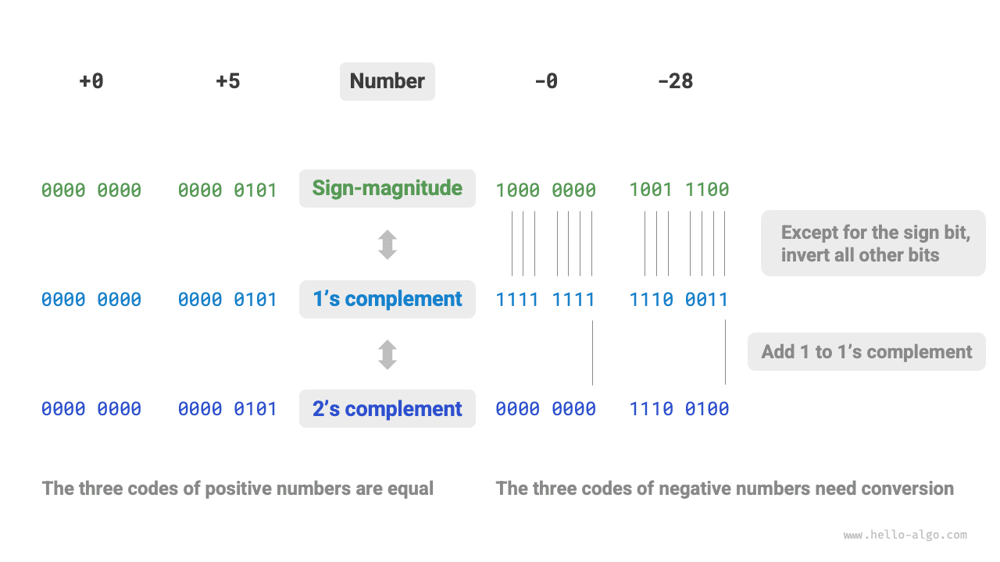

بنى البيانات
ترميز الأعداد *
في هذا الكتاب، الفصول المعلَّمة بنجمة * قراءات اختيارية. وإذا كان وقتك ضيقاً أو وجدتها صعبة، فيمكنك تجاوزها في البداية ثم العودة إليها بعد إتمام الفصول الأساسية.
التمثيل بالمقدار والإشارة ومتمم الواحد ومتمم الاثنين
في الجدول الوارد في القسم السابق، نجد أن جميع أنواع الأعداد الصحيحة تستطيع تمثيل عدد سالب واحد أكثر من الأعداد الموجبة. فمثلاً نطاق النوع byte هو $[-128, 127]$. وهذه الظاهرة مخالفة للحدس، وسببها الكامن يكمن في تمثيلات المقدار والإشارة ومتمم الواحد ومتمم الاثنين.
أولاً، تجدر الإشارة إلى أن الأعداد تُخزَّن في الحواسيب على صورة «متمم الاثنين». وقبل تحليل أسباب ذلك، لنعرّف هذه المفاهيم الثلاثة أولاً.
- التمثيل بالمقدار والإشارة: نعامل أعلى بت في التمثيل الثنائي للعدد كبت إشارة، حيث يمثّل $0$ عدداً موجباً و$1$ عدداً سالباً، وتمثّل البتات المتبقية قيمة العدد.
- متمم الواحد: متمم الواحد لعدد موجب هو نفسه تمثيله بالمقدار والإشارة. أما العدد السالب، فيُحصل على متمم الواحد له بعكس جميع البتات عدا بت الإشارة في تمثيله بالمقدار والإشارة.
- متمم الاثنين: متمم الاثنين لعدد موجب هو نفسه تمثيله بالمقدار والإشارة. أما العدد السالب، فيُحصل على متمم الاثنين له بإضافة $1$ إلى متمم الواحد.
يوضح الشكل أدناه طرق التحويل بين المقدار والإشارة ومتمم الواحد ومتمم الاثنين.

التمثيل بالمقدار والإشارة، رغم كونه الأكثر بداهة، له بعض القيود. فمن جهة، لا يمكن استخدام تمثيل الأعداد السالبة بالمقدار والإشارة في العمليات مباشرةً. فمثلاً، حساب $1 + (-2)$ بالمقدار والإشارة ينتج $-3$، وهو خطأ بيّن.
$$ \begin{aligned} & 1 + (-2) \newline & \rightarrow 0000 ; 0001 + 1000 ; 0010 \newline & = 1000 ; 0011 \newline & \rightarrow -3 \end{aligned} $$
ولحل هذه المشكلة، أدخلت الحواسيب متمم الواحد. فإذا حوّلنا المقدار والإشارة أولاً إلى متمم الواحد، وحسبنا $1 + (-2)$ بمتمم الواحد، ثم أعدنا النتيجة إلى تمثيل المقدار والإشارة، أمكننا الحصول على النتيجة الصحيحة $-1$.
$$ \begin{aligned} & 1 + (-2) \newline & \rightarrow 0000 ; 0001 ; \text{(Sign-magnitude)} + 1000 ; 0010 ; \text{(Sign-magnitude)} \newline & = 0000 ; 0001 ; \text{(1's complement)} + 1111 ; 1101 ; \text{(1's complement)} \newline & = 1111 ; 1110 ; \text{(1's complement)} \newline & = 1000 ; 0001 ; \text{(Sign-magnitude)} \newline & \rightarrow -1 \end{aligned} $$
ومن جهة أخرى، لتمثيل العدد صفر بالمقدار والإشارة تمثيلان: $+0$ و$-0$. وهذا يعني أن العدد صفر يقابل ترميزين ثنائيين مختلفين، مما قد يسبب غموضاً. فمثلاً، في الأحكام الشرطية، إذا لم نميّز بين الصفر الموجب والصفر السالب، فقد يؤدي ذلك إلى نتائج حكم غير صحيحة. وإذا أردنا معالجة الغموض بين الصفر الموجب والسالب، احتجنا إلى إدخال عمليات حكم إضافية، مما قد يقلل الكفاءة الحسابية للحاسوب.
$$ \begin{aligned} +0 & \rightarrow 0000 ; 0000 \newline -0 & \rightarrow 1000 ; 0000 \end{aligned} $$
وعلى غرار تمثيل المقدار والإشارة، يعاني متمم الواحد أيضاً من مشكلة غموض الصفر الموجب والسالب. لذلك أدخلت الحواسيب متمم الاثنين. ولنلاحظ أولاً عملية تحويل الصفر السالب من المقدار والإشارة إلى متمم الواحد ثم إلى متمم الاثنين:
$$ \begin{aligned} -0 \rightarrow ; & 1000 ; 0000 ; \text{(Sign-magnitude)} \newline = ; & 1111 ; 1111 ; \text{(1's complement)} \newline = 1 ; & 0000 ; 0000 ; \text{(2's complement)} \newline \end{aligned} $$
إضافة $1$ إلى متمم الواحد للصفر السالب تولّد حمل (carry)، ولكن بما أن طول النوع byte هو 8 بتات فقط، فإن $1$ الذي يفيض إلى البت التاسع يُهمَل. أي إن متمم الاثنين للصفر السالب هو $0000 ; 0000$، وهو نفسه متمم الاثنين للصفر الموجب. وهذا يعني أنه في تمثيل متمم الاثنين يوجد صفر واحد فقط، وبذلك يُحلّ غموض الصفر الموجب والسالب.
ويبقى سؤال أخير: نطاق النوع byte هو $[-128, 127]$، فمن أين يأتي العدد السالب الإضافي $-128$؟ نلاحظ أن جميع الأعداد الصحيحة في الفترة $[-127, +127]$ لها تمثيلات مقابلة بالمقدار والإشارة ومتمم الواحد ومتمم الاثنين، ويمكن التحويل بين المقدار والإشارة ومتمم الاثنين.
غير أن متمم الاثنين $1000 ; 0000$ استثناء، فليس له تمثيل مقابل بالمقدار والإشارة. وبحسب طريقة التحويل، نحصل على أن تمثيل هذا المتمم بالمقدار والإشارة هو $0000 ; 0000$. وهذا تناقض بيّن، لأن هذا التمثيل بالمقدار والإشارة يمثّل العدد $0$، وينبغي أن يكون متمم الاثنين له هو نفسه. وقد نصّت الحواسيب على أن متمم الاثنين الخاص $1000 ; 0000$ يمثّل $-128$. وفي الواقع، فإن نتيجة حساب $(-1) + (-127)$ بمتمم الاثنين هي $-128$.
$$ \begin{aligned} & (-127) + (-1) \newline & \rightarrow 1111 ; 1111 ; \text{(Sign-magnitude)} + 1000 ; 0001 ; \text{(Sign-magnitude)} \newline & = 1000 ; 0000 ; \text{(1's complement)} + 1111 ; 1110 ; \text{(1's complement)} \newline & = 1000 ; 0001 ; \text{(2's complement)} + 1111 ; 1111 ; \text{(2's complement)} \newline & = 1000 ; 0000 ; \text{(2's complement)} \newline & \rightarrow -128 \end{aligned} $$
ربما لاحظت أن جميع الحسابات أعلاه عمليات جمع. وهذا يلمّح إلى حقيقة مهمة: صُمّمت دارات العتاد داخل الحواسيب أساساً على أساس عمليات الجمع. ويعود السبب إلى أن عمليات الجمع أبسط في التنفيذ على العتاد من العمليات الأخرى (مثل الضرب والقسمة والطرح)، وأسهل في التوازي، وأسرع في التنفيذ.
ويرجى ملاحظة أن هذا لا يعني أن الحواسيب لا تستطيع سوى الجمع. فبدمج الجمع مع بعض العمليات المنطقية الأساسية، تستطيع الحواسيب تنفيذ عمليات رياضية أخرى متنوعة. فمثلاً، يمكن تحويل حساب الطرح $a - b$ إلى حساب الجمع $a + (-b)$؛ ويمكن تحويل حساب الضرب والقسمة إلى حساب عمليات جمع أو طرح متعددة.
يمكننا الآن تلخيص سبب استخدام الحواسيب لمتمم الاثنين: فبتمثيل متمم الاثنين، تستطيع الحواسيب استخدام الدارات والعمليات نفسها للتعامل مع جمع الأعداد الموجبة والسالبة، دون تصميم دارات عتاد خاصة للطرح أو معالجة غموض الصفر الموجب والسالب على حدة. وهذا يبسّط تصميم العتاد تبسيطاً كبيراً ويحسّن الكفاءة.
تصميم متمم الاثنين بالغ البراعة. ونظراً لضيق المساحة، نكتفي بهذا القدر. ونشجّع القراء المهتمين على الاستكشاف أكثر.
ترميز الأعداد العشرية العائمة
قد يلاحظ القارئ اليقظ أن int وfloat لهما الطول نفسه، فكلاهما 4 بايتات، لكن لماذا يكون نطاق float أكبر بكثير من نطاق int؟ هذا مخالف جداً للحدس، إذ من المنطقي أن float يحتاج إلى تمثيل الأعداد العشرية، فينبغي أن يكون نطاقه أصغر.
وفي الواقع، يعود السبب إلى أن العدد العشري العائم float يستخدم طريقة تمثيل مختلفة. ولنرمز إلى عدد ثنائي من 32 بتاً كما يلي:
$$ b_{31} b_{30} b_{29} \ldots b_2 b_1 b_0 $$
وفقاً لمعيار IEEE 754، يتكوّن float ذو 32 بتاً من الأجزاء الثلاثة التالية.
- بت الإشارة $\mathrm{S}$: يشغل بتاً واحداً، ويقابل $b_{31}$.
- بت الأُس $\mathrm{E}$: يشغل 8 بتات، ويقابل $b_{30} b_{29} \ldots b_{23}$.
- بت الكسر $\mathrm{N}$: يشغل 23 بتاً، ويقابل $b_{22} b_{21} \ldots b_0$.
وطريقة حساب القيمة المقابلة للعدد الثنائي float هي:
$$ \text {val} = (-1)^{b_{31}} \times 2^{\left(b_{30} b_{29} \ldots b_{23}\right)2-127} \times\left(1 . b{22} b_{21} \ldots b_0\right)_2 $$
وبالتحويل إلى النظام العشري، تكون صيغة الحساب:
$$ \text {val}=(-1)^{\mathrm{S}} \times 2^{\mathrm{E} -127} \times (1 + \mathrm{N}) $$
ونطاق كل مكوّن هو:
$$ \begin{aligned} \mathrm{S} \in & { 0, 1}, \quad \mathrm{E} \in { 1, 2, \dots, 254 } \newline (1 + \mathrm{N}) = & (1 + \sum_{i=1}^{23} b_{23-i} 2^{-i}) \subset [1, 2 - 2^{-23}] \end{aligned} $$

وبمراقبة الشكل أعلاه، بمعطى بيانات المثال $\mathrm{S} = 0$ و$\mathrm{E} = 124$ و$\mathrm{N} = 2^{-2} + 2^{-3} = 0.375$، لدينا:
$$ \text { val } = (-1)^0 \times 2^{124 - 127} \times (1 + 0.375) = 0.171875 $$
الآن يمكننا الإجابة عن السؤال الأول: يتضمن تمثيل float بت الأُس، مما يؤدي إلى نطاق أكبر بكثير من نطاق int. ووفقاً للحساب أعلاه، فإن أكبر عدد موجب يستطيع float تمثيله هو $2^{254 - 127} \times (2 - 2^{-23}) \approx 3.4 \times 10^{38}$، ويمكن الحصول على أصغر عدد سالب بتبديل بت الإشارة.
ورغم أن العدد العشري العائم float يوسّع النطاق، فأثره الجانبي التضحية بالدقة. فالنوع الصحيح int يستخدم جميع البتات الـ32 لتمثيل الأعداد، وتكون الأعداد موزّعة بالتساوي؛ أما بسبب وجود بت الأُس، فكلما كبرت قيمة العدد العشري العائم float، كبر الفرق بين عددين متجاورين عادةً.
وكما هو موضح في الجدول أدناه، لبتات الأُس $\mathrm{E} = 0$ و$\mathrm{E} = 255$ معانٍ خاصة، تُستخدم لتمثيل الصفر واللانهاية و$\mathrm{NaN}$ وغيرها.
الجدول
| بت الأُس E | بت الكسر $\mathrm{N} = 0$ | بت الكسر $\mathrm{N} \ne 0$ | صيغة الحساب |
|---|---|---|---|
| $0$ | $\pm 0$ | عدد دون معياري | $(-1)^{\mathrm{S}} \times 2^{-126} \times (0.\mathrm{N})$ |
| $1, 2, \dots, 254$ | عدد معياري | عدد معياري | $(-1)^{\mathrm{S}} \times 2^{(\mathrm{E} -127)} \times (1.\mathrm{N})$ |
| $255$ | $\pm \infty$ | $\mathrm{NaN}$ |
ومن الجدير بالذكر أن الأعداد دون المعيارية تحسّن دقة الأعداد العشرية العائمة تحسيناً ملحوظاً. فأصغر عدد معياري موجب هو $2^{-126}$، وأصغر عدد دون معياري موجب هو $2^{-126} \times 2^{-23}$.
ويستخدم النوع المزدوج الدقة double أيضاً طريقة تمثيل مشابهة لـfloat، ولن نفصّلها هنا.